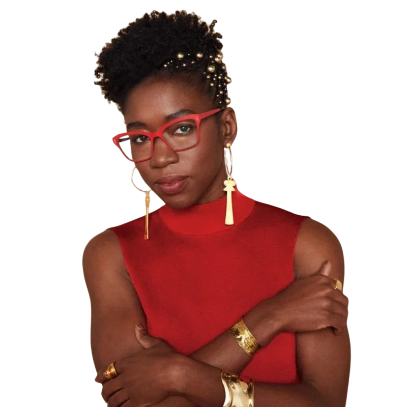
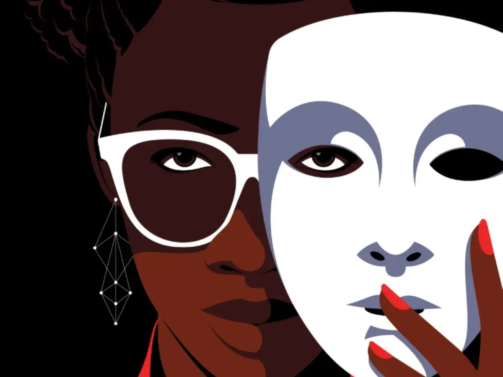

On this page we reflect on our power as tech developers and how ethics-based audits such as those that Joy Buolamwini has conducted are imperative for change.
How our project responds to Joy's call for

ALGORITHMIC ACCOUNTABILITY!
“Simply because decisions are made by a computer analyzing data does not make them neutral. Neural does not equate to neutral.”
Connections to Unmasking AI

Joy uses the term algorithmic accountability to express the overarching subject area that will hopefully lead to more laws and regulations surrounding the governance of AI through risk assessments and AI audits. This term expresses the foundation of Joy’s work by dissecting our AI algorithms, while pinpointing which areas of society and which demographics are being systematically impacted by bias. With the development of our own machine learning program, an algorithm that classifies images, we were forced to think about the ways our program may be exclusionary and how the social systems we are a part of are reflected in our code. Our takeaway from this project is that the inputs and training of predictive models are transitive, and more complex than one may initially think. Although our program is not being implemented into systems such as law enforcement, the military, healthcare, and more, it is still imperative that we minimize error and bias. These are all considerations that Joy highlights in her book, and are questions that all developers should ask themselves when designing AI programs to promote algorithmic accountability.

Our Lessons Learned
- Slow development minimizes error
- Image detection can be inherently biased
- Small errors reflect greater inequities
- Having a diverse baseline matters
- Design choices influence results
Project Reflection
We began our machine learning process aware of the nuances of this form of computer programming. With AI on the rise, we were eager to create our own smaller version of this powerful data prediction system. We would be feeding our program hand drawn image data, and it would then learn to classify new data, or images, based on the content we had chosen for it to digest.
We decided to create all of our own images, drawing on Joy’s self-sufficient nature as motivation for the work we would have ahead of us. One of Joy’s calls for reform that guided our process was the necessity of slow, intentional, and systematic model development. We decided to break our work into chunks, to reduce our own burn out, but also give ourselves the time and space for creativity and authenticity to grow, and to maximize the impact of our project.
We worked step by step so that when errors in our data or code were to arise, we had the time and resources to quickly fix them. We initially chose symbols related to our website theme, including ghosts, stars, moons, and suns. Both of us independently created a program using the Teachable Machine learning framework. We then compared image classification accuracy and discussed how to improve the results together.
Just as Joy identified bias in facial recognition software, one of our image categories performed at lower accuracy levels than the others. Even though we had equal images in each category, there was still an inherent inaccuracy that we had to correct.
The transfer learning nature of this web-based classification tool uses a pre-trained neural network. The only layers of this Google-based model that are being retrained, is the data that we provided, or our hand-drawn images. So although we had 4 categories (ghost, star, moon, and sun) and provided our 4 drawings of each category, with 5 different orientations of each image, there was still an error in the equity, or quality of these images which we could see by the less accurate results showing up in the ghost category. In order to correct this small error, we had to critically think about the characteristics of the ghost drawings and why the program was having difficulty differentiating and categorizing them.
So, we drew up two more images of ghosts that were simpler shapes, as the ghost category had the most variance in art style from simple lines, to more complex and abstract shapes and shadows. This boosted the ghost results to 100%. This makes me think of the ‘Pale Male’ datasets that Joy encountered in her work on facial recognition. If there is little variance in datasets, inaccuracies in outputs will not be solved by simply increasing the volume of data, but by diversifying the inputs, which is exactly what we did. We decided to add another category of images, clouds, to train our program to better differentiate these categories while also mitigating algorithmic bias.
Joy explains how the “coded gaze” is a reflection of our existing societal biases and prejudices. When these baseline, or benchmark datasets are disproportionately populated by one category of data, machine learning systems train themselves on this data, and then produce inaccurate results. Sometimes, and in the case of our machine learning program, there needs to be an imbalance in input data to correct pre-existing, systemic biases.
Although we did not design our program to reflect biases in image categorization, it still influenced the results we saw, and challenged us to rethink our initial approach. Something that we did not have to wrestle with due to the simplicity of our program, was assessing intersectional metrics such as those of race and gender in which Joy assessed in the facial recognition systems of large tech companies like Microsoft and IBM. Thinking about the inputs of the data she was assessing, it makes sense that breaking down the larger categories of race and gender, in combination with one another, would provide more telling answers of where the inaccuracies lie. However, our machine’s design included both of us as artists and our drawing capabilities as we created the benchmark data our model was trained on.